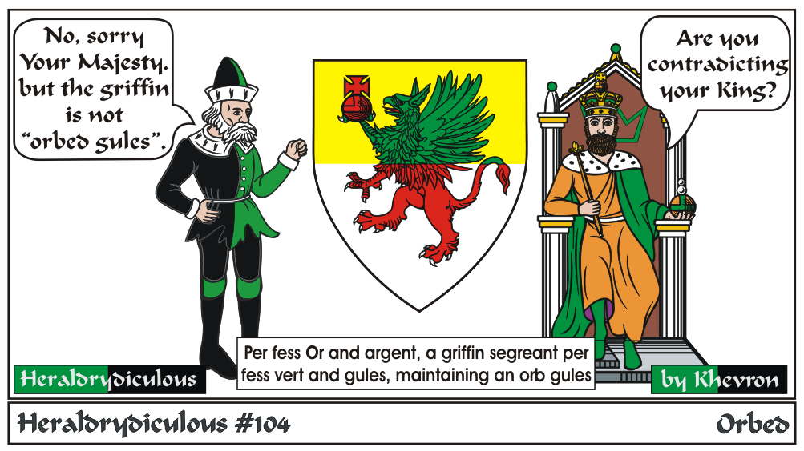
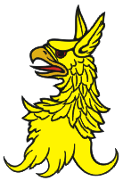

While the griffin is indeed holding an orb, the heraldic term "orbed" refers to the color of the eyes, if
they are not the usual color.
Below is a Griffin Head Erased Or, orbed gules. The griffin head differs from an eagle's head primarily
by the addition of ears.

e-mail: 
Back to Khevron's Heraldry Page